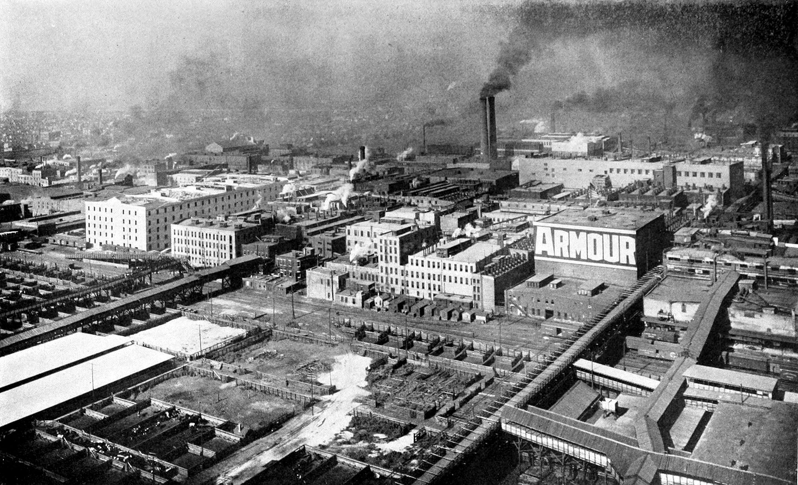
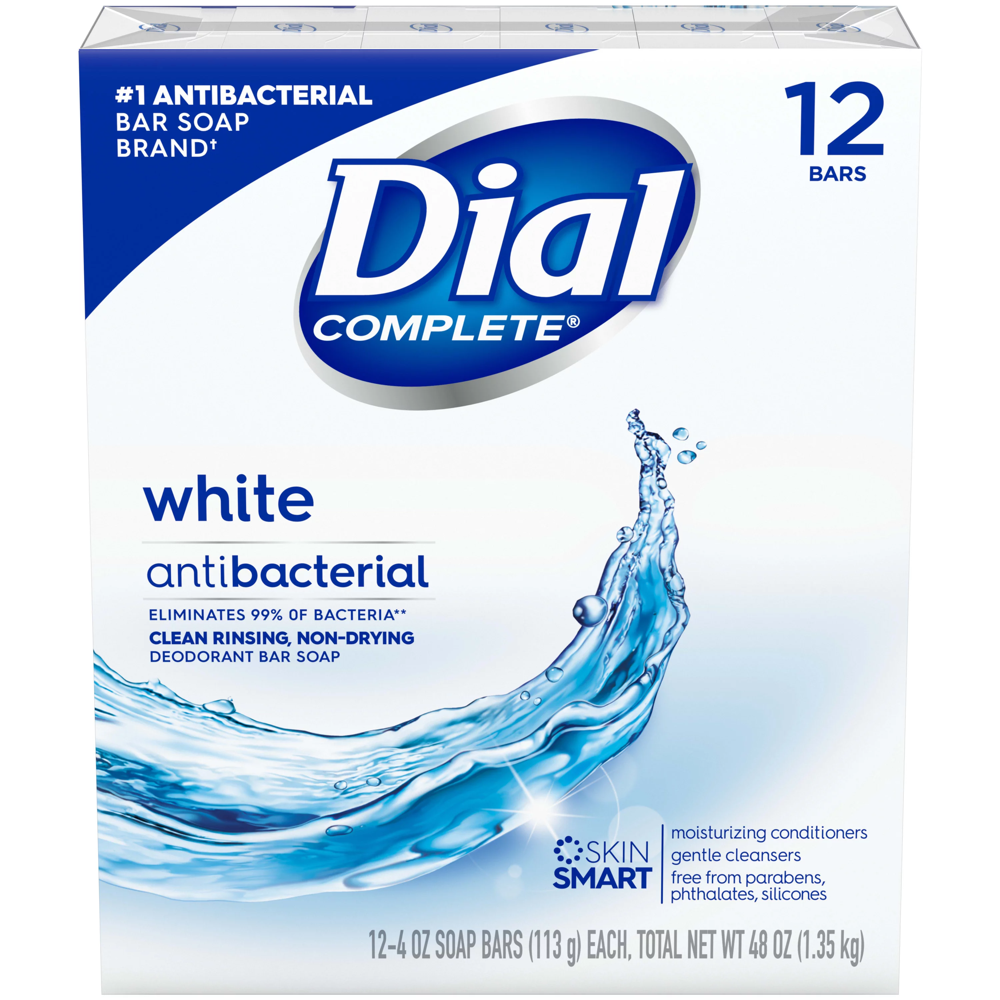
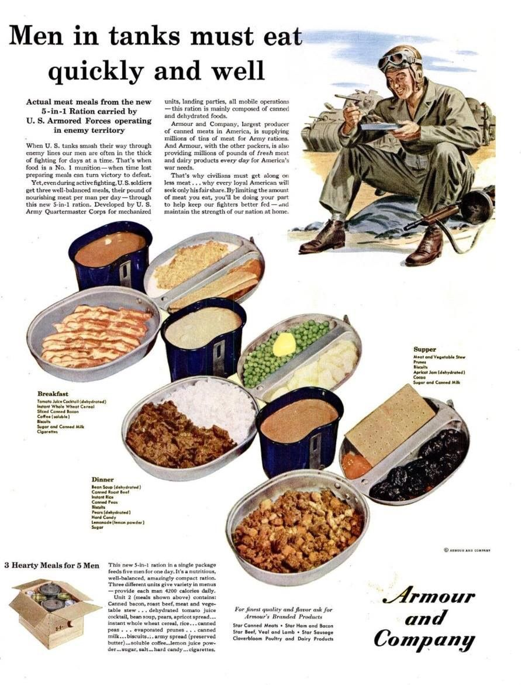
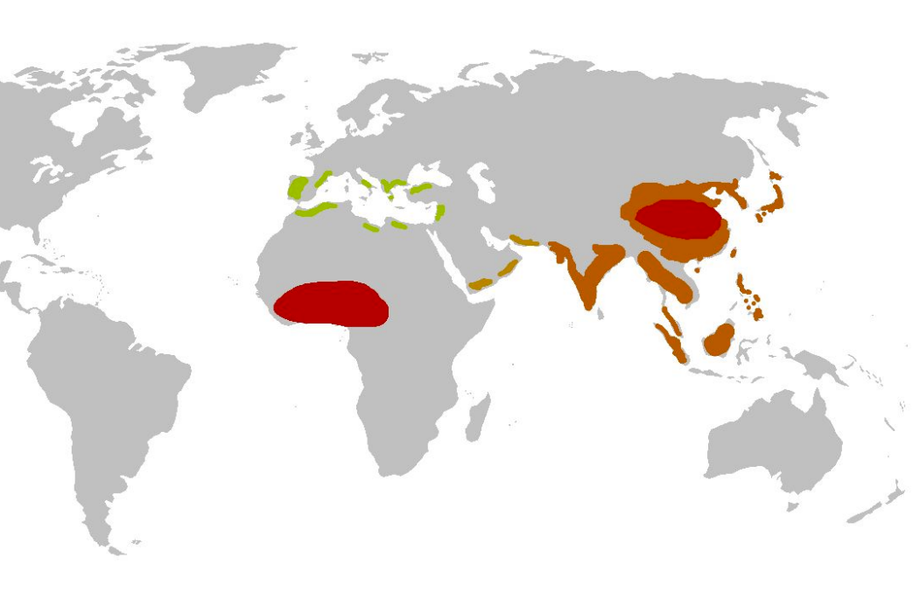
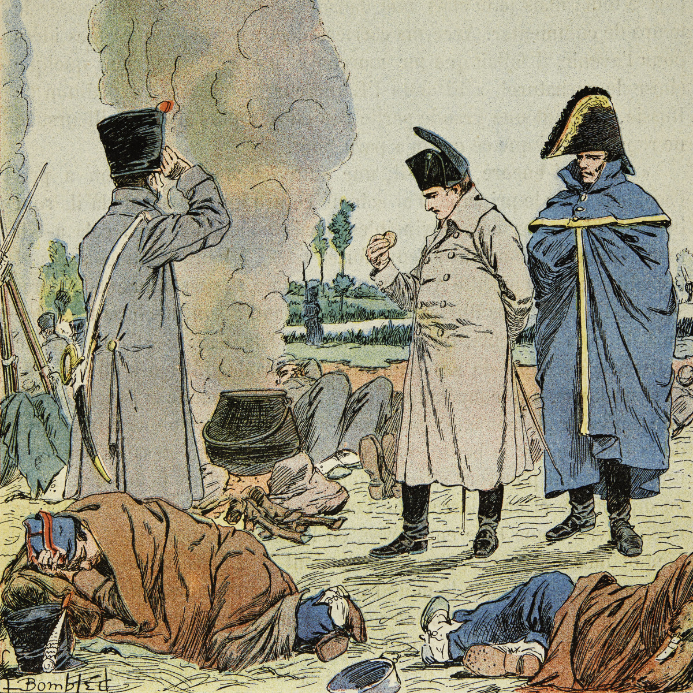
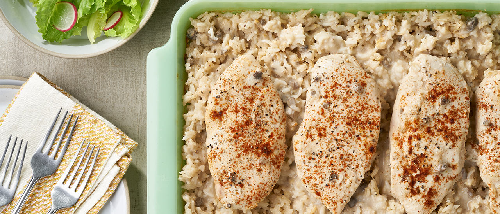
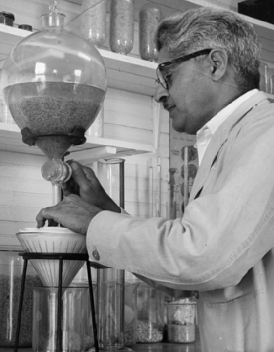
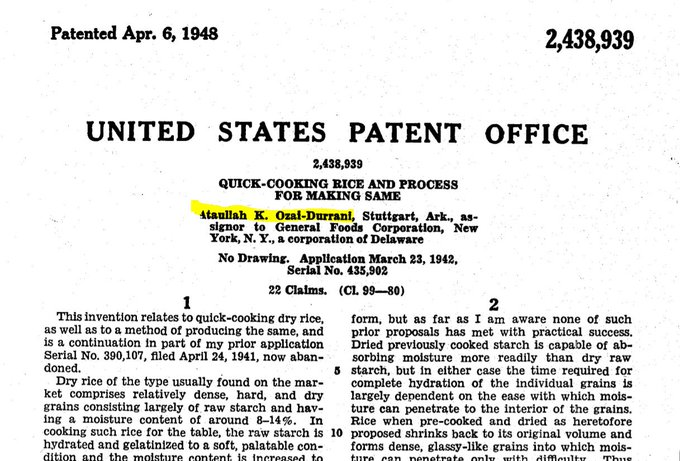
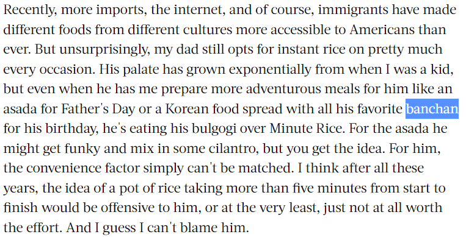
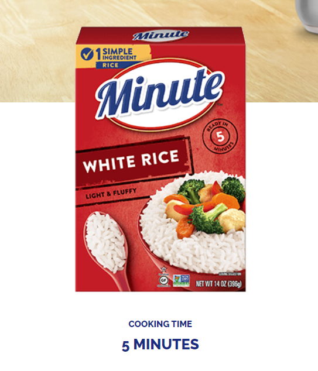

미군 탱크병이 먹는 제육덮밥의 정체는? - Minute Rice 이야기
게시: 2022-12-15T06:30:35+09:00
저는 군대 밥 이야기에 관심이 많아서 인터넷에서 관련 내용을 종종 찾아봅니다. 오늘 글은 Armour and Company라는 이름의 미국 식품 회사에서 생산한 기갑 부대용 5인 1세트의 C ration 광고 포스터에 나온 메뉴 중 하나에 대한 것입니다.

(Armour and Company라고 하니까 기갑 부대 전용의 특별한 전투식량만 생산하는 회사처럼 오해되기 쉽습니다만, 아머 & 컴퍼니는 시카고에 근거를 둔 대형 육류회사 이름입니다. Philip Danforth Armour를 중심으로 한 아머 형제들이 1867년 설립한 회사로서, 남북 전쟁 이후 철도와 전신이 미국 서부 개발을 촉진하면서 성장한 대표적인 회사 중 하나입니다. 위 사진은 1910년에 찍은 시카고의 아머 & 컴퍼니 사의 전경입니다.)

(아머 & 컴퍼니에서는 육가공을 하다보니 소의 지방과 같은 부산물도 많이 나왔으므로, 나중에는 그걸 이용한 비누 제조까지 하게 되었는데 그 비누 회사 이름이 다이얼(Dial)입니다. 요즘 젊은 분들도 다이얼 비누라는 이름이 익숙할지 모르겠네요. 지금은 다이얼 사업부를 독일 회사에 매각했습니다.) "탱크병들은 빨리, 그리고 잘 먹어야 합니다"라는 제목의 이 포스터에는 아침과 점심, 그리고 저녁 식사 메뉴가 작은 글씨로 적혀 있습니다. 그러니까 저 커다란 박스에는 탱크 1대의 승무원 5명의 아침-점심-저녁이 다 들어있는 셈입니다. 실제로 WW1은 물론 WW2 기간 중에도 많은 종류의 전투 식량들이 1인용 세트보다는 저렇게 다인용 세트나 심지어 중대 인원용 세트 등으로 포장되어 제공되었습니다. 아침 : 토마토 쥬스 칵테일 (건조) 즉석 통밀 시리얼 얇게 자른 통조림 베이컨 커피 (분말) 비스킷 설탕과 통조림 우유 담배 점심 (Dinner) : 콩 수프 (건조) 통조림 로스트 비프 즉석 쌀밥
통조림 완두콩 비스킷 서양배 (건조) 사탕 레모네이드 (분말) 설탕 저녁 (Supper) : 고기와 채소 스튜 자두 비스킷 살구 잼 (건조) 코코아 설탕과 통조림 우유

(흔히 dinner라고 하면 지금은 당연히 저녁이라고 생각하지만, 원래 dinner라는 것의 정확한 뜻은 정찬, 그러니까 하루 중 가장 제대로 차려먹는 끼니를 뜻합니다. 그리고 20세기 초반까지만 하더라도 dinner는 점심 때 먹는 것이 유럽 사회의 일반적인 분위기였습니다. 특히 영국의 경우엔 오후 4시 경에 티타임을 가지면서 과자류 뿐만 아니라 간단한 고기류까지 먹었으므로, 저녁은 일반적으로 간소하게 먹었습니다. 이런 경향을 깨고 점심을 간단하게 먹고 대신 저녁을 제대로 차려 먹게 된 것은 미국의 바쁜 기업 문화 때문에 점심을 대충 간단히 때우게 된 것이 시초라고 하네요. 사내 음주를 엄격하게 금지하는 청교도적 미국 기업들조차도 그 프랑스 지사의 구내 식당에서는 점심 때 와인을 허용할 정도로 프랑스는 점심을 길게 먹는 문화를 고집했지만, 지금은 한가한 프랑스 지방 도시에서조차도 점심은 샌드위치 등으로 간단하게 때우는 경향이 대세라고 합니다. 써놓고 보니 그림과는 다소 동떨어진 썰이 되어 버렸군요.) 저 포스터의 구호처럼, 탱크병들은 빨리 먹어야 합니다. 탱크는 원래 화력 장비가 아니라 기동 장비입니다. 즉 탱크의 핵심 가치는 강력한 화력으로 적을 섬멸하는 것보다는, 적의 방어선을 뚫고 쾌속으로 이동하여 적의 체계적인 방어를 무력화시키는 것입니다. 그러다보니 탱크에게는 방어력 뿐만 아니라 기동성이 매우 중요한데, 탱크병들이 이동을 멈추고 탱크 밖에 기어나와서 밥을 지어 먹는데 1~2시간씩 소모한다면 아무리 좋은 엔진을 탑재하고 있어도 그 탱크의 기동성은 크게 낮아질 것입니다. 게다가 탱크병들이 밖에 나와 밥을 먹는 동안에는 그 탱크 부대는 매우 취약한 상태에 놓이게 됩니다. 따라서 가급적 식사 시간은 짧아야 합니다. 그런데 저 탱크병들을 위한 전투 식량 중 점심 메뉴 그림은 마치 제육덮밥처럼 보이지요? 실제로 저건 canned roast beef와 instant rice입니다. 통조림 로스트 비프는 그렇다치고, 즉석 쌀밥은 대체 어떤 것일까요? 설마 당시에도 햇반 같은 것이 있었을까요? 원래 유럽 군대에게 쌀은 별로 핵심적이지 않은 군량이었습니다. 그럴 수 밖에 없는 것이, 일단 유럽에 쌀이 본격적으로 도입된 것은 AD 8세기 이후 아랍을 통해서였습니다. 인도로부터 쌀을 들여왔던 아랍인들이, 스페인과 시실리 섬을 점령하고 난 뒤에 거기에서도 쌀을 재배했던 것이지요. 그래서 지금도 유럽에서는 이탈리아의 리조또와 스페인의 빠에야 정도가 유명한 쌀 요리입니다. 그러나 쌀의 특성상 많은 물과 높은 여름 기온이 필요했으므로 유럽 전역에서 쌀이 많이 재배되지는 않았습니다. 그러니 당연히 로마 군단병이나 백년전쟁 당시 영국 장궁병들이 쌀을 먹을 기회는 거의 없었을 것입니다.

(AD 8세기 경의 쌀 재배지 지도입니다. 기니만을 중심으로 한 서부 아프리카에도 쌀 재배가 왕성한 것이 보이는데, 이는 양쯔강이 원산지인 아시아종이 전해진 것이 아니라 완전히 별도로 생겨난, 아프리카종의 쌀이라고 합니다.) 그러나 확실히 쌀은 매우 우수한 곡물입니다. 일단 쌀을 주식으로 하는 나라들의 인구 밀도가 높다는 사실 하나만으로도 단위 면적당 생산량이나 영양학적 우수성이 그대로 드러납니다. 좋지 않은 예이긴 하지만, 18~19세기 아프리카에서 미국으로 흑인 노예들을 실어날랐던 노예선들이 선창에 짐승만도 못한 상태로 묶어놓은 흑인들에게 먹인 것이 현미였습니다. 당시 노예선의 노예상들은 흑인들을 짐승만도 못하게 다루었지만, 최대한 많은 흑인들을 살려서 미국 동해안에 도착해야 더 많은 돈을 벌 수 있었습니다. 그들이 가장 손쉽게, 가장 적은 비용으로 가장 많은 사람들을 연명시키기 위해 선택한 음식이 현미라는 점도, 매우 비극적이긴 하지만, 쌀의 우수성을 반증합니다. 그런 우수한 곡물이 군량으로 활용되지 않는다면 매우 이상한 일일 것입니다. 실제로 미국에서도 유럽에서도 쌀은 점점 더 많이 병사들의 식량으로 활용되었습니다. 나폴레옹의 그랑다르메(Grande Armée) 병사들도 구할 수만 있다면 항상 쌀을 정식으로 배식 받았습니다. 다만, 쌀은 밀에 비해 전투 식량으로서 좋은 점과 안 좋은 점을 동시에 가진 곡물입니다. 밀은 도정과 제분을 거쳐 반죽과 긴 발효, 그리고 많은 연료를 써서 오븐에서의 제빵을 거쳐야 먹을 수 있는 곡물이므로 무척 성가셨습니다. 그러나 쌀은 그냥 도정만 거친 뒤 병사들에게 나누어주면 각자 알아서 냄비에 끓여 먹을 수 있었으므로 준비가 무척 간편한 곡물입니다. 무엇보다, 잘 말린 쌀은 가벼웠고 보존성이 좋았습니다. 하지만 반대로, 밀은 사전에 공장에서 비스킷(건빵)으로 구워 병사들의 배낭에 넣어주면 수개월 동안 (비록 맛은 없더라도) 조리도구는 커녕 식기가 없이도 간편하게 빨리 먹을 수 있는 즉석 식품이 되었습니다. 그에 비해 쌀은 꽤 긴 시간에 걸쳐 물로 익혀야만 먹을 수 있었으므로 즉석 식품과는 거리가 멀었습니다. 어떤 식품이라도 준비 기간이 길면 군대를 위한 전투 식량으로서는 낙제점입니다. 그래도 나폴레옹의 군대에서 쌀이 인기 품목이었던 이유는 당시 병사들의 식사는 주로 스튜나 수프 형태로 이루어졌기 때문이었습니다. 병사들은 고단한 하루의 행군을 마치고나면 감자건 말고기이건 모든 재료를 냄비에 넣고 물을 부어 끓여 먹는 경우가 많았습니다. 그런데 거기에 쌀을 넣으면 국물을 걸죽하게 만들어주고 또 쌀이 국물 속 양분을 흡수하여 병사들에게 포만감을 주었습니다. 쇠고기 국밥을 번역하면 beef soup with rice 정도가 되는데, 따지고 보면 (쌀밥의 양이 본격적인 국밥에 비하면 좀 적긴 하지만) 나폴레옹의 병사들도 국밥을 먹었던 셈입니다. 쌀이 없는 경우에는 벽돌처럼 단단하게 마른 건빵이라도 대신 넣었습니다.

(식당에서 수프를 줄 때 옆에 크래커 두어 개를 함께 서빙하거나, 수프 속에 끄루통(crouton)이라고 불리는 직육면체 형태의 튀긴 빵 조각을 넣어주는 경우가 있습니다. 끄루통의 원래 뜻이 '긴 빵의 양 끝, 굳은 빵 덩어리'입니다. 그러니까 딱딱하게 굳은 오래된 건빵이나, 말라 비틀어져서 도저히 그냥 먹을 수 없게 된 묵은 빵을 수프에 넣어 걸죽하게 끓여 먹던 노동계급 또는 군대의 질박한 전통이 이어진 것이라고 보셔도 되겠습니다.)
다만 이렇게 쌀을 넣은 스튜 혹은 수프를 끓이려면 시간이 오래 걸리는 것은 어쩔 수가 없었습니다. 당시 유럽 군대 중 행군 속도가 가장 빨랐다는 나폴레옹의 그랑다르메도, 특별한 경우가 아니면 하루에 20~25km 경우를 행군하는 것이 보통이었습니다. 논산 육군 훈련소에서 실시하는 행군이 8시간 32km인 점을 생각하면 매우 느림보 행군입니디만, 이들이 이렇게 느렸던 것은 대략 해가 지면 모닥불을 피우고 감자를 캐오고 쌀을 넣은 스튜를 끓여야 했기 때문입니다. 현대 미국인들도 쌀을 생각보다는 자주 먹습니다. 특히 chicken & rice의 형태로 자주 먹지요. 그런데 수십 분을 들여 수프를 끓이는 것이 싫어서 일반 가정에서도 일상적으로 캠벨 수프 깡통을 즐겨 먹는 미국인들에게, 30분 넘게 쌀밥을 짓는 것은 무척 고역이었을 것입니다. 특히 20세기 초반 들어 급속도로 공업화가 진행되면서 많은 가정이 간편식을 찾게 되면서 쌀밥을 짓는 시간은 점점 고역으로 느껴졌습니다.

(치킨 & 라이스입니다. 제가 카투사로 복무할 때 미군 식당에도 자주 나오던 음식인데, 꼭 저렇게 생긴 것은 아닙니다. 그냥 치킨에 안남미 쌀밥이 나오는 정도에요.)
이때 등장한 것이 Ataullah Ozai-Durrani라는 아프간 출신 화학자였습니다. 당시의 아프간 국왕과 먼 사촌간이었다는 그는 1897년생이었는데, 26세인 1923년 미국으로 이주하여 화학자로 교육을 받았습니다. 그는 주로 석유 화학 쪽에서 일을 했지만 원예와 요리에도 관심이 많았는데, 어느 날 그의 집으로 미국인 친구들을 초대하여 미국인들이 좋아하는 요리, chicken & rice를 자신이 직접 요리하여 대접했습니다. 그런데 이때 반응이 너무 좋았고, 특히 그 쌀밥에 대해 친구들이 '이건 시장에 출시해도 잘 팔리겠다'라고 부추겼습니다. 그때부터 반쯤 진지하게 연구에 착수한 오자이-두라니는 뜨거운 물을 붓고 몇 분만 기다리면 따끈한 쌀밥을 먹을 수 있도록 미리 반조리된 형태의 가공미를 만드는데 성공했습니다. 그는 1941년 뉴욕에 있는 General Foods Corporation의 사무실을 방문하여 즉석에서 냄비를 걸고 5분 안에 맛있는 쌀밥을 조리하는 시연을 보여주었습니다. 나중에 인수 합병을 거쳐 지금의 Kraft 사가 되는 제네럴 푸즈에서는 이 시연을 보고는 즉각 그와 계약을 했습니다. 끓는 물을 부으면 5분 안에 쌀밥이 되는 이 제품은 Minute Rice라는 이름으로 팔려 바쁜 미국 가정에서 큰 인기를 끌었고, 이어서 WW2에 미국이 참전하면서 미육군이 C-ration의 일부로 대량으로 사들이면서 오자이-두라니는 거부가 되었습니다.

(쌀 관련해서 뭔가 연구 중인 오자이-두라니입니다.)

(즉석 조리 쌀밥과 그 공정에 대한 미국 특허장입니다. 맨 앞에 오자이-두라니의 이름이 나옵니다.) 1949년부터는 전국적 TV 광고가 시작되면서 미닛 라이스는 더 큰 전성기를 맞이했습니다. 지금도 미닛 라이스는 미국에서 아주 잘 팔리는 제품인데, 제가 읽은 아래 글에서는 자신의 아버지가 좋아하는 한국 음식을 차려드릴 때도 아버지는 불고기를 미닛 라이스에 얹어 드신다고 합니다.

(특이한 것으로, bulgogi는 이제 정말 유명해져서 일반 명사화된 요리 이름이긴 한데, 여기서는 아예 반찬도 'banchan'이라고 아무 설명없이 일반 명사로 썼습니다. 참고로 위 사진 속 글은 2021년 5월에 쓰여진 것입니다.) 물론 이 미닛 라이스는 우리가 즐겨먹는 끈끈하고 짧은 자포니카 종이 아니라 푸석푸석하고 긴 인디카 종의 쌀입니다. 참고로 윗 글을 읽다가 저도 처음 알았는데, 밥이 진 것을 영어로는 'mushy', 된 것을 'stiff'라고 표현하는 모양이네요.

Source : https://en.wikipedia.org/wiki/Armour_and_Company https://www.wwiidogtags.com/wwii-magazine-ads/5-in-1-ration/ https://minuterice.com/about/ https://www.foodandwine.com/grains/rice/minute-rice-midwest https://www.campbells.com/recipes/one-dish-chicken-rice-bake/ https://twitter.com/nafeesrehmandr/status/1139963246448979970